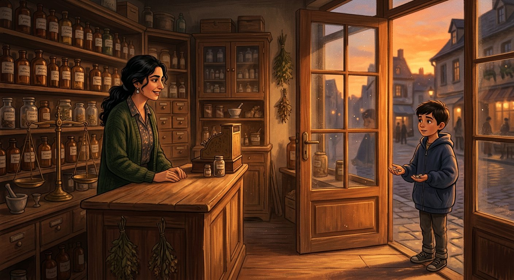
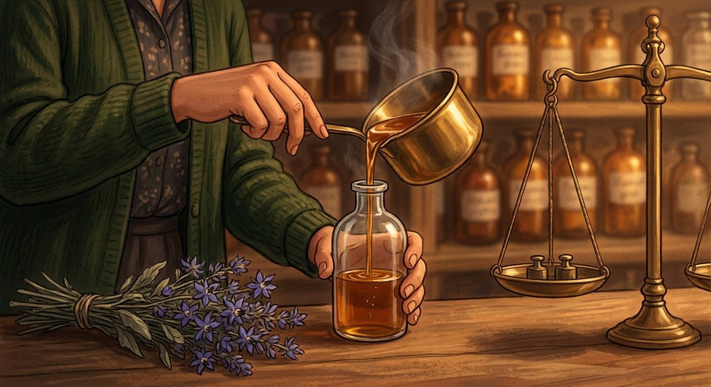
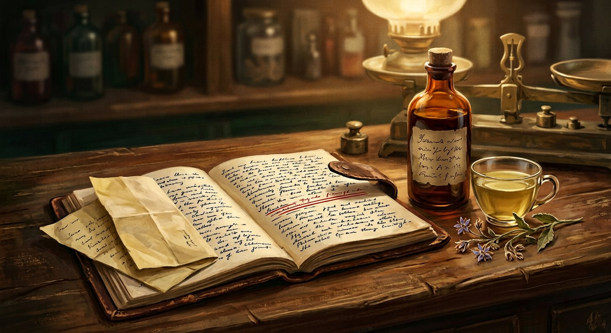
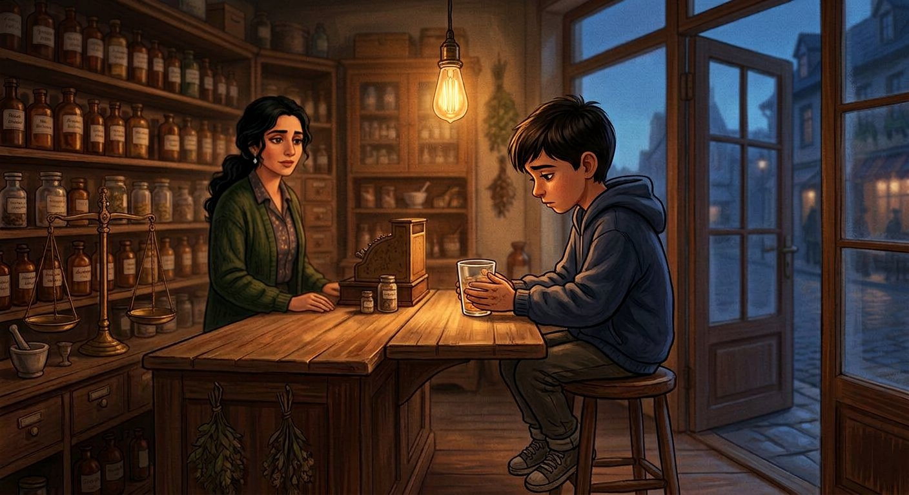
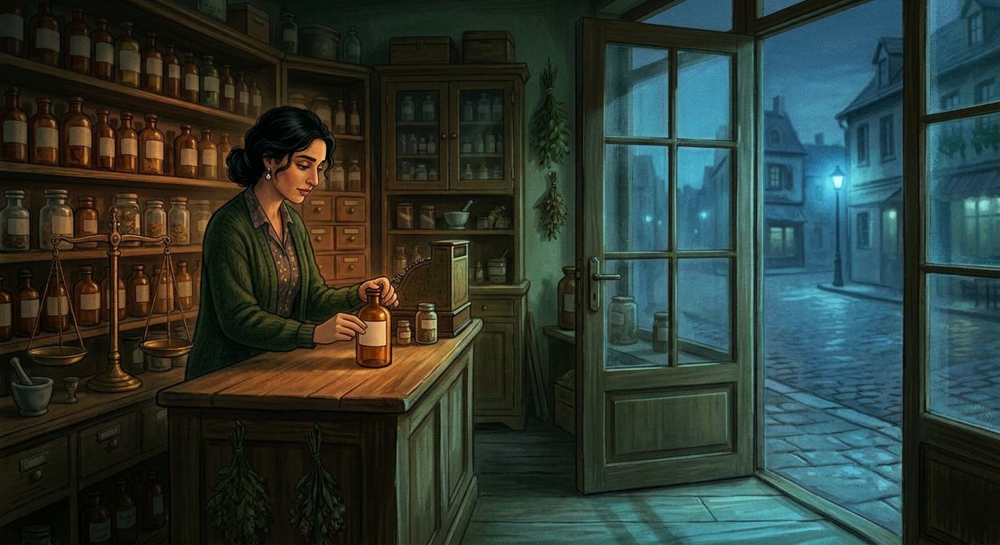

پدرم میگفت داروخانه سه بو دارد: الکل، نعنا، و ترسِ کسی که پشت درِ شیشهای ایستاده است. سه ماه بعد از مرگش، من هنوز فقط دوتای اول را حس میکردم.
آن جمعه داشتم کشوی نسخههای باطله را خالی میکردم که در باز شد و پسری آمد تو. ده سالش بود، شاید کمتر. کاپشن سرمهایِ گشاد، کفشهایی که یک اندازه بزرگتر از پایش بود. سکهها را روی پیشخوان گذاشت و دو بار شمرد.
— شربت گلگاوزبان. همون که آقای داروساز خودش میساخت.
در این شهر، همه پدرم را «آقای داروساز» صدا میزدند، انگار این دو کلمه را روی نسخهها نوشته بودند و اسم کوچکش دیگر لازم نبود.
گفتم کسی دیگر آن شربت را نمیسازد. گفت: «پس کِی میسازید؟» گفتم نمیدانم. گفت: «من جمعهی دیگر میآیم.» و رفت. سکهها را برداشت، ولی نه همهشان؛ یکی روی پیشخوان ماند، همانجایی که شمرده بود.

دفتر پدرم لای جعبههای پلاستیکی مانده بود؛ جلد چرمی، لبهاش سوخته از سیگاری که یادم نمیآید کِی خاموشش کرد. آخرِ دفتر، با خودکار آبی: «شربت گلگاوزبان: بیست گرم گل خشک. آبِ جوشیده که کمی خنک شده باشد. یک قاشق عسل. همش نزن؛ بگذار گل خودش باز شود.» زیرش، با خودکار قرمز، سه بار خط کشیده بود و نوشته بود: «برای یاسین ـ بیحساب.»
جمعهی بعد شربت آماده بود؛ کهربایی، ته بطری یک رسوب نرم. یاسین پولها را گذاشت، شمرد، و پرسید: «میشه همینجا بخورم؟»
لیوان را دادم. تا آخر خورد. ته لیوان یک جرعه ماند. گفتم نمیخوری؟ گفت: «آقای داروساز میگفت این جرعه مال مادرمه.» بعد، مثل کسی که از فراموش شدن میترسد، اضافه کرد: «همون که شبها نمیخوابه.»

جمعهها شدند عادت. او میآمد، پولها را میگذاشت، من شربت را میریختم، یک جرعه ته لیوان میماند و او میرفت.
یک بار پرسیدم دکتر رفتهاند؟ گفت رفتهاند. گفتم پس چرا بهتر نمیشود؟ شانه بالا انداخت: «دکتر برای مادرِ آدم دارو مینویسد. برای مادرِ من نسخه ننوشت.» منظورش را نفهمیدم و نپرسیدم، چون بعضی سؤالها را آدم از بچهی دهساله نمیپرسد.
بعد از آن، دربارهی پدرم میپرسید. اینکه از کِی داروساز شد، صبحها چه چیزی گوش میداد، کدام قفسه را بیشتر دوست داشت. بعضی جوابها را نمیدانستم و راحت میگفتم نمیدانم؛ و او همانقدر راحت سؤال بعدی را میپرسید. مثل کسی که از جواب، پرسیدن را لازمتر دارد.

مرداد بود. رفتم نانواییِ سرِ کوچه، چون پدرم میگفت بوی نانِ همسایه، بوی دارو را کم میکند. نانوا، که همیشه دستش بوی خمیر و کنجد داشت، یاسین را دید از جلوی در رد میشود و گفت: «باز جمعهست.»
گفتم بچهی کیست؟ گفت: «یاسین نوروزی. مادرش سه ماه بعد از به دنیا آمدنش رفت.» پدرش رانندهی جادهی قدیم بود، تا دیروقت نمیآمد. یک تکه نان روی لبهی حوض گذاشت برای گنجشکها و گفت: «پیرمرد داروساز هم جمعهها داداشِ کوچیکترش بود.»
آن جمعه، شربت را که ریختم، گفتم: «من نمیتونم برای مادرت داستان بگم. نمیشناسمش.»
لیوان را گذاشت. تا سی شمردم؛ سی ثانیه کش آمد. بعد گفت: «میدونم.»
و بعد همهاش را گفت، یکجا، بیتوقف، مثل کسی که سنگریزه از جیبش خالی میکند. سه سال پیش، شبها نمیخوابید. پدرش او را آورده بود داروخانه، چون هیچجای شهر تا دیروقت باز نبود. پدرم شربت را ساخته بود و پرسیده بود شربت برای کیست؟ یاسین گفته بود برای مادرم. پدرم گفته بود: «پس هر جمعه بیا. شربت مالِ مادرته؛ تو بخور، من از مادرت برایت میگویم.»
گفتم آن جرعهای که ته لیوان میماند؟ گفت: «اون برای اینه که یک چیزی ازش بمونه.»

برگه لای صفحهی حسابهای سالِ هفتمِ داروخانه بود؛ یک بار تا شده بود و بعد، یازده سال، فراموش. خطش خط پدرم نبود: «آقای داروساز، من از این شهر میروم. نمیدانم چه میشود. اگر پسر شد و از من پرسید، بگویید مادرش آدمِ خوابآلودی بود که چایش را با گلِ گاوزبان میخورد و به آن میگفت شربتِ خواب. بقیهاش را نمیدانم. بقیهاش را شما بگویید.»
آن شب، بطری را برداشتم و برچسبش را عوض کردم. جای تاریخِ انقضا نوشتم: «هر جمعه.» درِ داروخانه را که بستم، آسمان مثل همیشهی آن شهر، بیستاره و صاف بود.
دارو در قفسهها نبود. دارو، همان جملهی بعدی بود که باید میگفتم.